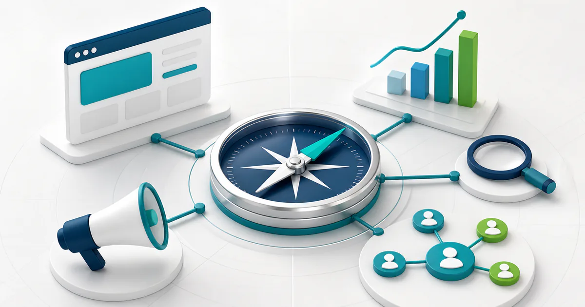
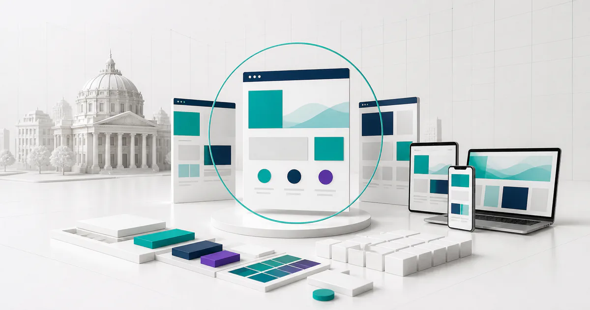
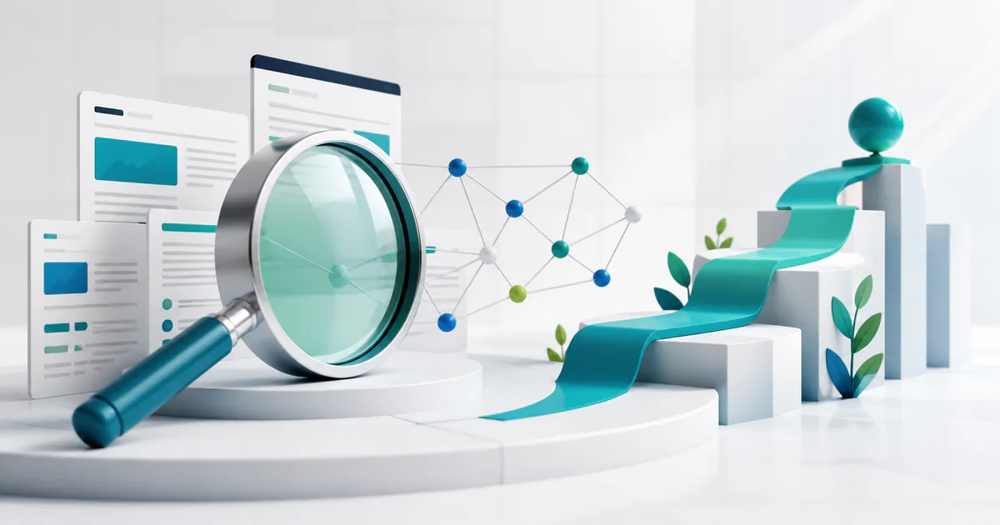
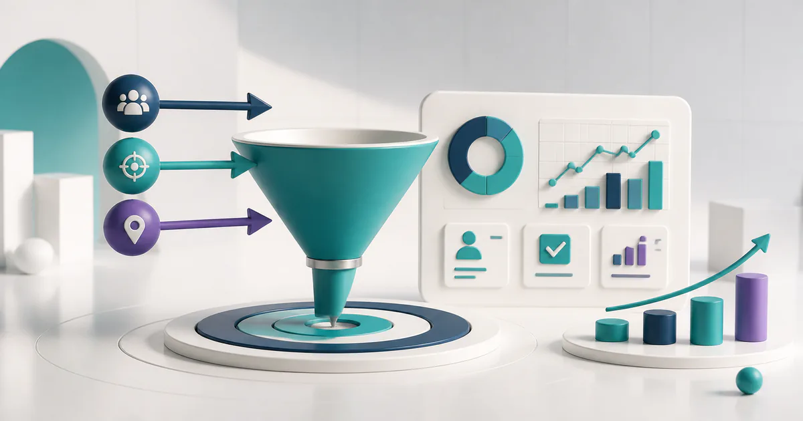
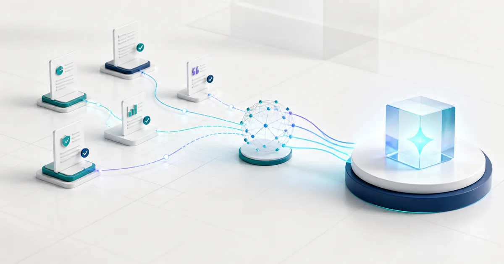
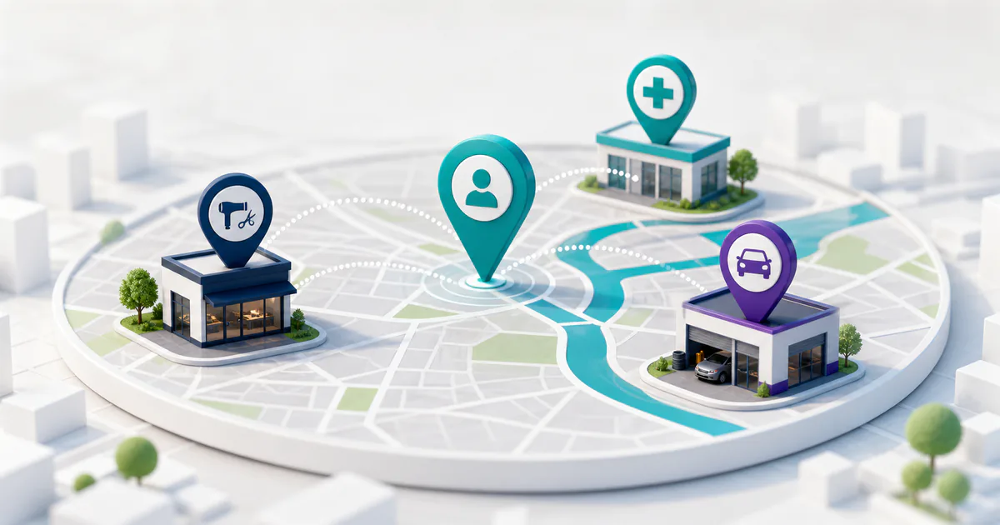
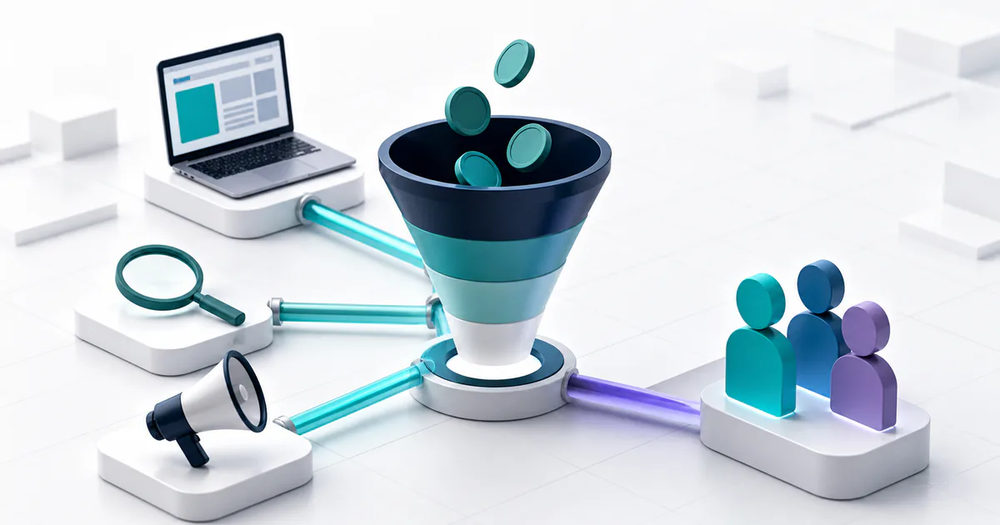
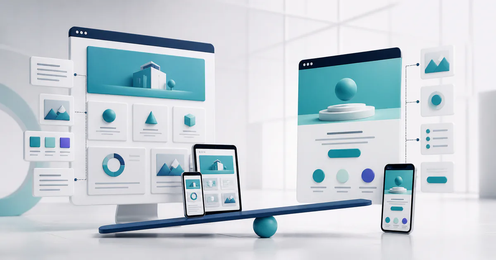
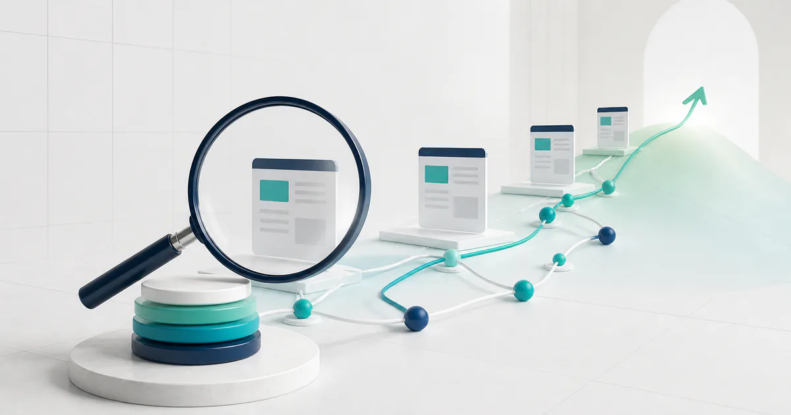
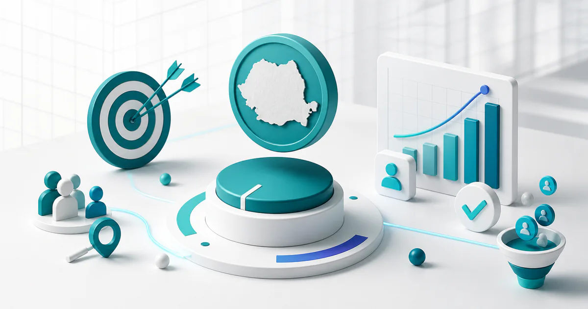

Cum alegi o agenție de marketing online: criterii și întrebări
O agenție bună leagă strategia, website-ul, traficul și măsurarea de un rezultat comercial clar, nu de indicatori de suprafață.
Citește articolulGhiduri clare despre SEO, promovare online, website-uri și măsurarea rezultatelor. Fără jargon inutil, cu exemple și pași aplicabili.
Caută după întrebare, serviciu sau obiectiv. Rezultatele sunt ordonate după relevanță, inclusiv pentru formulări apropiate și mici greșeli de tastare.

O agenție bună leagă strategia, website-ul, traficul și măsurarea de un rezultat comercial clar, nu de indicatori de suprafață.
Citește articolul
Un website trebuie evaluat după rolul comercial, administrare, SEO și performanță, nu doar după aspectul primei pagini.
Citește articolul
O agenție SEO serioasă explică intențiile, paginile, implementarea, conținutul, autoritatea și măsurarea, fără să garanteze poziții fixe.
Citește articolul
O agenție Google Ads trebuie să optimizeze spre conversii și rezultate comerciale, păstrând contul și datele sub controlul clientului.
Citește articolul
Google precizează că bunele practici SEO existente rămân baza: pagina trebuie să fie accesibilă, indexabilă și eligibilă pentru afișarea fragmentelor.
Citește articolul
Afacerea locală trebuie să fie găsită în momentul nevoii, să ofere informații exacte și să transforme căutarea într-un apel sau o programare simplă.
Citește articolul
Costul real include media, administrare, creație, pagină, măsurare și uneori instrumente; ofertele trebuie comparate componentă cu componentă.
Citește articolul
Landing page-ul concentrează o singură acțiune, iar site-ul construiește context, autoritate și mai multe trasee de informare.
Citește articolul
Costul SEO depinde de starea tehnică, numărul de pagini, concurență, conținut, autoritate și capacitatea de implementare a firmei.
Citește articolul
Costul Google Ads include cheltuiala directă în platformă și resursele necesare pentru administrare, creație, pagini și măsurare.
Citește articolul